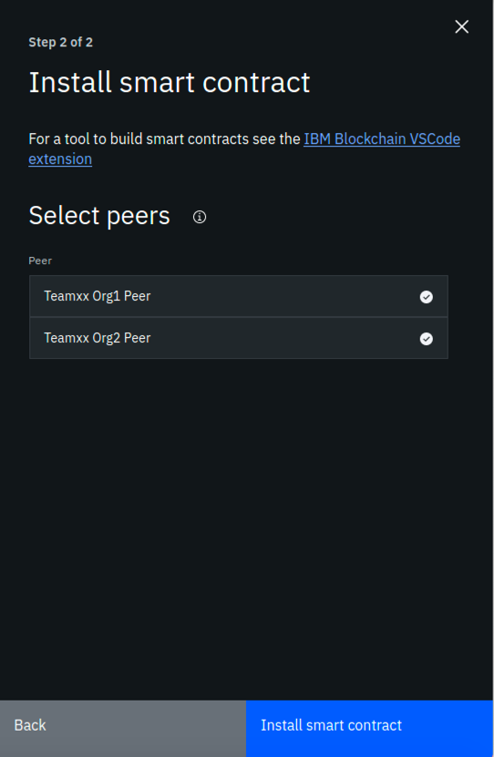
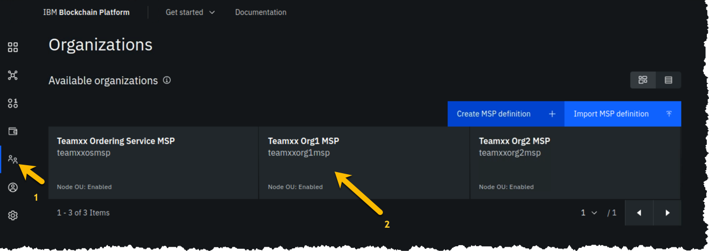
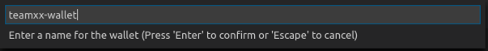

IBM Blockchain Platform for Multicloud Part 2 - Deploying a Smart Contract
This lab will walk you through deploying the smart contracts that you worked with from the VSCode labs: namely commercial-bond and commercial-paper. This lab assumes that you have successfully completed the IBM Blockchain Platform for Multicloud Part 1 - Deploying a blockchain network lab. If you have not completed part 1, you must do so before continuing with this lab.
Section 1: Export Commercial Paper and Commercial Bond
Remember from the VSCode labs, you have already packaged up the commercial paper (papercontract@0.0.2) and commercial bond (commercial-bond) smart contracts. Now you will export each to their own smart contract package (in .cds format) and deploy them onto your IBM Blockchain Platform for Multicloud peers.
Note
If you did not complete the VSCode labs, you can still continue with this lab. You need to download the .cds packages here: commercial-paper and commercial-bond. Save them to /home/tecadmin/ on your lab image. Then you can skip to Section 2 of this lab.
1. Go back to your VSCode editor, and go to the IBM Blockchain Platform Extension view. Under the Smart Contract Packages panel, right-click on commercial-bond@0.0.1 and select Export Package (you will have many less packages than the screen shots below!):

2. Select the location /home/tecadmin/, and click Enter. Upon successful exporting, you will see a message like below:

3. Now, in the same VSCode IBM Blockchain Platform Extension view. Under the Smart Contract Packages panel, right-click on papercontract@0.0.2 and select Export Package:

4. Select the location /home/tecadmin/, and click Enter. Upon successful exporting, you will see a message like below:

Section 2: Install Commercial Bond to your Blockchain Network
1. Go back to your IBM Blockchain Platform Console at your assigned URL. Go to the Smart Contracts panel, and select Install Smart Contract:

2. In the Install Smart Contract side panel, upload the commercial-bond@0.0.1.cds package, and click Next.

3. Now select both peers to install to and press Install Smart Contract. Note this is not a very realistic situation because we are installing to peers from two separate organizations. In reality, the smart contract would be shared on a private Github repo with members of the blockchain network and each organization would install the smart contract to their peers through their console.

4. You should see the following in the Installed Smart Contracts panel:

Section 3: Install Commercial Paper to your Blockchain Network
1. From the Installed Smart Contracts panel, select Install Smart Contract again. Then upload the papercontract@0.0.2.cds file and select both peers to install to. At the end of this flow, you will see the following in the Installed Smart Contracts panel:

Section 4: Instantiate Commercial Bond
1. From the Smart Contracts - Installed Smart Contracts panel, select the three dots to the right of commercial-bond and select Instantiate:

2. In the Instantiate smart contract side panel, select teamXX-channel1 as the channel to instantiate to:

3. In the next side panel, select both members to endorse transactions. And then select 1 out of 2 members need to endorse transactions.

4. In the next side panel, select TeamXX Peer Org1 as the peer to approve proposals for instantiating the smart contract.

5. In the next side panel, skip adding a private data collection and just hit Next.

6. In the next panel, type in instantiate as the function name. And leave the arguments box blank.
Section 5: Instantiate Commercial paper
1. From the Smart Contracts - Installed Smart Contracts panel, select the three dots to the right of papercontract and select Instantiate:

2. Follow the same instructions as Section 4, steps 2 - 6, to instantiate papercontract. At the end of the flow, if you scroll down on the Smart Contracts panel, you will see the list of Instantiated Smart Contracts includes commercial-bond and papercontract:
Now that you have both smart contracts instantiated on the channel, we are ready to connect to the smart contract from VSCode.
Section 6: Register client user for TeamXX Org1
We need to register a client user to use to enroll application identities for Org1.
1. Go to the Nodes view on your IBM Blockchain Platform Console, and navigate to the Certificate Authorities section. Then select TeamXX Org1 CA:

2. In the TeamXX Org1 CA view, select Register user:

3. In the Register User side panel, fill in the following fields for the user, then hit Next:

4. In the next panel, just press Next:

5. Now you should see the app-admin user you added show up under Registered users:

Section 7: Register client user for TeamXX Org2
Now we will register a client user for enrolling application identities for Org2.
1. Go to the Nodes view on your IBM Blockchain Platform Console, and navigate to the Certificate Authorities section. Then select TeamXX Org2 CA:

2. In the TeamXX Org2 CA view, select Register user:

3. In the Register User side panel, fill in the following fields for the user, then hit Next:
4. In the next panel, just press Next:
5. Now you should see the new user you added show up under Registered users:

Section 8: Download the connection profile to connect to TeamXX Org1 Peer
The connection profile is a .JSON file that describes all the connection endpoints, MSP information, channel information and certification information required to connect to your peer. A client application wishing to invoke transactions against a smart contract would require this file to obtain the necessary information needed to make that connection. Without IBM Blockchain Platform, this is a file you would put together yourself using existing sample connection profiles available in the Hyperledger Fabric community. With the IBM Blockchain Platform, you can download an already made file from the IBM Blockchain Platform Console.
1. Go to the Smart Contracts view from the Console:

2. Scroll down to the Instantiated Contracts section. Click on the three dots to the right of papercontract and select Connect with SDK:

3. In the Connect with SDK side panel, you want to select the following:
MSP for connection: team19org1msp
Certificate Authority: Team19 Org1 CA
And then click on Download connection profile button at the bottom. Then you can click on Close.
Section 9: Create a new Gateway in VSCode IBM Blockchain Platform Extension
Now you can use that connection profile to create a new gateway in VSCode IBM Blockchain Platform Extension.
1. In the VSCode IBM Blockchain Platform view, click on the + in the Fabric Gateways panel:

2. Then in the pop-up window, type in teamXX-ibp as your new gateway name.

3. Upon success, you will see the following message in the OUTPUT panel in VSCode: [SUCCESS] Successfully added a new gateway.
Section 10: Create a new wallet and identity in VSCode IBM Blockchain Platform Extension
1. In the VSCode IBM Blockchain Platform view, click on the + in the Fabric Wallets panel:

2. Select create a new wallet and add an identity in the pop-up window:

3. Enter teamXX-wallet in the next pop-up window:

4. Enter isabella as the name for the identity:

5. Enter teamXXorg1msp as the MSPID (important to replace the xx with your team number)

6. Pick Select a gateway and provide an enrollment ID and secret

7. Choose teamXX-ibp as the gateway you want to enroll and identity with:

8. Type app-admin as the enrollment ID:

9. Type app-adminpw as the enrollment secret:

10. Upon success you will see the following messages in the OUTPUT panel:
[6/26/2019 10:23:14 PM] [INFO] addWallet
[6/26/2019 10:23:18 PM] [INFO] addWalletIdentity
[6/26/2019 10:23:56 PM] [SUCCESS] Successfully added identity to wallet
[6/26/2019 10:23:56 PM] [SUCCESS] Successfully added a new wallet
You will also see the new wallet and identity in the Fabric Wallets panel:
Section 11: Connect to the teamXX-ibp gateway
Now that you have created a wallet and enrolled an ID and password, you are ready to connect to the teamXX-ibp gateway.
1. Click on the teamXX-ibp in the `Fabric Gateways panel.

2. In the pop-up window, select teamXX-wallet.

3. Upon success, you will see the following message in the OUPUT panel:
[6/26/2019 10:29:46 PM] [INFO] connect
[6/26/2019 10:29:47 PM] [SUCCESS] Connecting to team19-ibp
4. You will also see your new gateway represented in the Fabric Gateways panel:

Section 12: Issue a transaction to test the connection
Now we are ready to submit a test transaction.
1. From the Fabric Gateways panel, expand into the commercial-bond@0.0.1 contract, right-click on the getAllBondsFromIssuer transaction and select Submit Transaction:

2. Type in "Digibank" inside the brackets as the argument:

3. Hit Enter on the transient data pop-up window.
4. Upon success you will see the two bonds listed in the OUTPUT panel:
[6/26/2019 10:40:22 PM] [INFO] submitting transaction getAllBondsFromIssuer with args Digibank
[6/26/2019 10:40:26 PM] [SUCCESS] Returned value from getAllBondsFromIssuer: "[{\"Key\":\"\\u0000org.bondnet.commercialbondlist\\u0000\\\"Digibank\\\"\\u0000\\\"00001\\\"\\u0000\",\"Record\":{\"bondNumber\":\"00001\",\"class\":\"org.bondnet.commercialbond\",\"currentState\":1,\"faceValue\":\"50000\",\"interestRate\":\"0.04\",\"issueDateTime\":\"2019-05-17\",\"issuer\":\"Digibank\",\"key\":\"\\\"Digibank\\\":\\\"00001\\\"\",\"maturityDateTime\":\"2020-05-17\",\"owner\":\"Digibank\"}},{\"Key\":\"\\u0000org.bondnet.commercialbondlist\\u0000\\\"Digibank\\\"\\u0000\\\"00002\\\"\\u0000\",\"Record\":{\"bondNumber\":\"00002\",\"class\":\"org.bondnet.commercialbond\",\"currentState\":1,\"faceValue\":\"50000\",\"interestRate\":\"0.04\",\"issueDateTime\":\"2019-07-17\",\"issuer\":\"Digibank\",\"key\":\"\\\"Digibank\\\":\\\"00002\\\"\",\"maturityDateTime\":\"2020-07-17\",\"owner\":\"Digibank\"}}]"
5. Now, return to the IBM Blockchain Platform console at your assigned URL. Go to the Channels view, and click on the team19-channel1 tile.

6. You should see the block height at 7. Now scroll down to Block History section, and click on the block at the top of the table.

7. Now you will see a list of transactions in block #6. Click on the top most transaction (there should only be one):

8. In the side panel you should see the digibank transaction that you just submitted via the VSCode IBM Blockchain Platform Extension.

9. OPTIONAL: you can submit additional transactions through VSCode, and watch the block height increase and look at the transaction in the IBM Blockchain Platform Console.
Congraulations!! You've now successfully enrolled an application identity and used it to invoke transactions against a smart contract deployed to IBM Blockchain Platform.